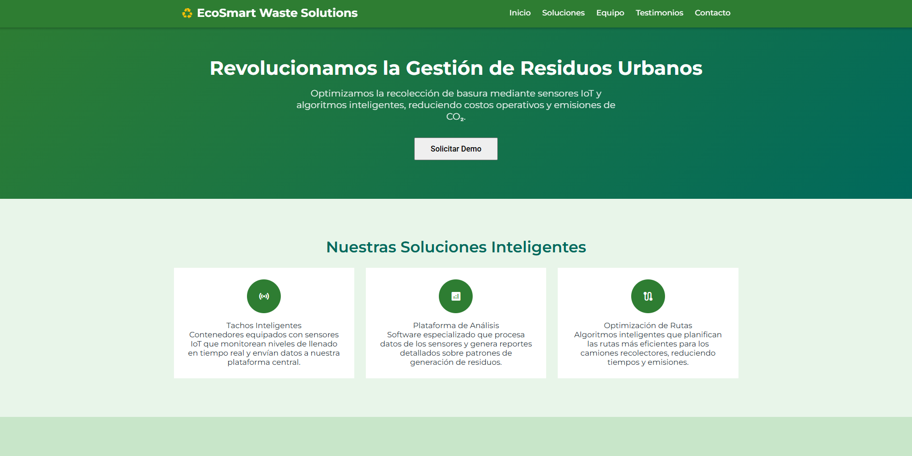

| Member | Code |
|---|---|
| Mathias Andree Cardenas Huaman | U202316353 |
| Diego Andres Avalos Cordova | U202313922 |
| Joaquin Enrique Carranza Tesén | U20191B935 |
| Piero Alberto Velarde Luyo | U20211A620 |
| Sebastian Gabriel Zuñiga Calle | U20221b479 |
| Versión | Fecha | Autor | Descripción de modificación |
|---|---|---|---|
| TB1 | 11/09/25 | Andree Cardenas | CapÍtulo I y su descripción |
| TB1 | 12/09/25 | Joaquin Carranza | Entrevistas, Diagrama de base de datos y Landing Page. |
| TB1 | 14/09/25 | Andree Cardenas | Parte final del Capítulo II |
| TB1 | 15/09/25 | Andree Cardenas | Realización completa del Capítulo III |
| TB1 | 15/09/25 | Sebastian Zuniga | Modelado C4 Capitulo IV |
| TB1 | 15/09/25 | Sebastian Zuniga | Modelado Diagrama de clases Capitulo IV |
| TB1 | 11/09/25 | Diego Avalos | Capitulo I antecedentes y problematicas |
| TB1 | 11/09/25 | Diego Avalos | Capitulo II Competidores y entrevistas |
| TB1 | 11/09/25 | Diego Avalos | Capitulo IV Landing Page Wireframe |
| TB1 | 11/09/25 | Sebastian Zuniga | Sprint Backlog Capitulo V |
| TB1 | 15/09/25 | Piero Velarde | Capitulo II Needfinding |
| TB1 | 15/09/25 | Piero Velarde | Capitulo IV Landing Page Mock-Up |
| TP1 | 05/10/25 | Diego Avalos | Capitulo IV Sprint 2 |
| TP1 | 08/10/25 | Diego Avalos | Capitulo IV Sprint 2 Services Documentation Evidence |
| TP1 | 10/10/25 | Diego Avalos | Capitulo IV Sprint 2 Execution Evidence |
| TP1 | 10/10/25 | Joaquin Caranza | Landing Page |
| TP1 | 10/10/25 | Andree Cardenas | Desarrollo del messages del fronted |
| TP1 | 09/10/25 | Andree Cardenas | Mejora del impact mapping y Mejora del Product Backlog |
| TP1 | 10/10/25 | Piero Velarde | Mejora del Lean UX Canvas |
| TP1 | 10/10/25 | Piero Velarde | Capitulo V Services Documentation Evidence for Sprint Review |
| TP1 | 10/10/25 | Piero Velarde | Capitulo V Software Deployment Evidence for Sprint Review |
| URL de la organización del proyecto |
|---|
| https://github.com/UPC-PRE-202502-1ASI0729-7391-NOMBRE |
| URL del repositorio del reporte |
|---|
| https://github.com/UPC-PRE-202502-1ASI0729-7391-NOMBRE/EcoClean-Report |
| URL del repositorio de la landing page |
|---|
| https://github.com/UPC-PRE-202502-1ASI0729-7391-NOMBRE/Landing-page |
| URL del repositorio del Frontend |
|---|
| https://github.com/UPC-PRE-202502-1ASI0729-7391-NOMBRE/EcoClean-Web-Frontend |
ABET – EAC - Student Outcome 3
| Criterio específico | Acciones realizadas | Conclusiones |
|---|---|---|
| Comunica oralmente con efectividad a diferentes rangos de audiencia. | Mathias Andree Cardenas Huaman TB1:Participé en la exposición del proyecto explicando objetivos, propuesta de valor y avances técnicos de manera clara y estructurada. Adapté mi lenguaje al público: técnico para docentes y más sencillo para compañeros y posibles usuarios. Además, realicé dos entrevistas al primer segmento objetivo, lo que me permitió practicar una comunicación directa, empática y comprensible con personas externas al equipo. TP:Durante el desarrollo de EcoSmart Waste Solutions, expuse los avances del capítulo 3 y del módulo de mensajería con los municipios ante el equipo y representantes municipales. Se adaptó el lenguaje y el nivel técnico según la audiencia, usando recursos visuales y ejemplos prácticos para explicar la arquitectura del sistema y los beneficios de la solución. Joaquin Enrique Carranza Tesén TB1: Durante el proyecto demostré mi capacidad de comunicarme oralmente de manera efectiva con distintos tipos de audiencia. En las entrevistas con usuarios, adapté mi lenguaje para que fuera claro y entendible, facilitando la obtención de información relevante. Al presentar el diagrama de base de datos, utilicé un lenguaje más técnico dirigido a mis compañeros y docentes, asegurándome de explicar la lógica detrás de las relaciones y estructuras planteadas. Finalmente, en la exposición de la landing page desarrollada y desplegada, empleé una comunicación enfocada en destacar las funcionalidades, el proceso de implementación y los beneficios de la solución, ajustando el nivel de detalle según el público. Esto me permitió transmitir ideas de manera clara, ordenada y efectiva en diferentes contextos. TP1: Durante el desarrollo de la landing page, me aseguré de comunicar oralmente con efectividad a diferentes rangos de audiencia, tanto con mis compañeros del equipo técnico como con los docentes y posibles usuarios. Adapté mi lenguaje según el público: utilicé términos técnicos cuando conversaba con el equipo de desarrollo para coordinar mejoras y resolver problemas, y una explicación más clara y accesible cuando presenté los avances a los docentes o al público no especializado. Esto permitió que todos comprendieran el propósito de las mejoras y los resultados obtenidos. Diego Andrés Avalos Córdova TB1: Durante esta primera entrega participé activamente en la exposición del proyecto, explicando los fundamentos de la arquitectura de información, los sistemas de navegación y la propuesta de interacción de la aplicación. En cada intervención busqué transmitir los conceptos de forma ordenada y sencilla para que tanto docentes como compañeros comprendieran la lógica detrás de nuestras decisiones de diseño. Además, al presentar apartados como el Web Style Guide, Information Architecture, Navigation Systems y entrevistas, adapté mi lenguaje según la audiencia, manteniendo un balance entre lo técnico y lo práctico. Esto me permitió reforzar mi capacidad de comunicarme oralmente con distintos grupos y demostrar claridad en la exposición de ideas. TP1: En Sprint 2 participé explicando la implementación y despliegue de la Landing Page y la Web Application, incluyendo funcionalidades como tendencias por distrito, mapa interactivo, mensajes directos, registro e inicio de sesión. También presenté la documentación de endpoints de la API y la integración con la Web App. Mostré capturas de pantalla y videos de navegación para evidenciar la interacción del usuario. Esto reforzó mi habilidad de comunicar de manera efectiva avances complejos y decisiones de diseño ante distintos públicos. Sebastian Gabriel Zuñiga Calle TB1: Durante la exposición del proyecto presenté las secciones de Software Configuration Management (entorno de desarrollo, gestión del código fuente, convenciones de estilo y despliegue) y la implementación de la Landing Page y servicios en Sprint 1. Expliqué de manera clara los apartados de Sprint Planning, Sprint Backlog, evidencias de desarrollo y despliegue, así como los resultados de la colaboración del equipo. Adapté el lenguaje técnico al nivel de los docentes para resaltar la rigurosidad del proceso seguido, mientras que con mis compañeros utilicé un enfoque más práctico para que comprendieran cómo cada fase aportaba valor al avance del proyecto. Esto me permitió comunicar ideas de forma ordenada y efectiva, tanto en el plano técnico como organizativo. Piero Alberto Velarde Luyo TB1: Mi responsabilidad en esta entrega fue la de crear diversos documentos visuales y representaciones de la experiencia de usuario, como User Personas, User Task Matrix, User Journey Map, Empathy Map, y los wireframes de la landing page. Comencé diseñando los User Personas, basándome en datos y entrevistas para representar a distintos segmentos de nuestra audiencia. Con esta información, elaboré una User Task Matrix que visualizaba las tareas principales de los usuarios y su relación con las funcionalidades de la plataforma. Además, desarrollé el User Journey Map, mapeando cada paso del usuario desde su primer contacto hasta la conversión, lo cual fue clave para tomar decisiones más centradas en el usuario. TP: Para el desarrollo de este sprint de EcoSmart Waste Solution realicé cambios necesarios con respecto al sprint anterior, todo esto para evidenciar una mejora contínua. A su vez ayudé con el despliegue de la aplicación web junto con el desarrollo y conexión con la fakeAPI |
Mathias Andree Cardenas Huaman TB1:Logré transmitir ideas con claridad y adaptarme a distintos tipos de audiencia, fortaleciendo mis habilidades de expresión oral y empatía en la comunicación. TP: La exposición permitió comunicar ideas con claridad y adaptar el mensaje a distintos públicos. Se fortalecieron habilidades para explicar aspectos técnicos de forma comprensible, favoreciendo la colaboración y validación del proyecto entre desarrolladores y autoridades. Joaquin Enrique Carranza Tesén TB1: En síntesis, la elaboración de entrevistas, el diseño del diagrama de base de datos y el desarrollo de la landing page reflejaron la importancia de una comunicación oral clara y adaptada al contexto. La capacidad de ajustar el lenguaje según la audiencia permitió no solo transmitir información técnica, sino también garantizar la comprensión y la participación activa de los involucrados. De este modo, se evidencia que la comunicación efectiva constituye una competencia fundamental en el ámbito académico y profesional, al favorecer el intercambio de ideas y el cumplimiento exitoso de los objetivos del proyecto. TP1: Mi capacidad de comunicación oral fue clave para transmitir ideas de manera clara y efectiva, facilitando el trabajo en equipo y asegurando que las decisiones sobre la landing page fueran comprendidas y validadas por todos los involucrados. Diego Andrés Avalos Córdova TB1: La experiencia de explicar la arquitectura de información, los sistemas de navegación y la lógica de los prototipos reforzó la importancia de expresarse con claridad frente a distintos públicos. Adaptar el lenguaje a contextos técnicos y no técnicos me permitió transmitir de forma más efectiva nuestras ideas y decisiones. Este proceso evidenció que la comunicación oral no solo es necesaria para presentar resultados, sino también para generar confianza, asegurar comprensión y fomentar la colaboración dentro y fuera del equipo. TP1: La presentación de los avances del Sprint 1 y 2, incluyendo la implementación y despliegue de la Landing Page y Web App, la integración de funcionalidades como tendencias, mapas, mensajes y registro/inicio de sesión, así como la documentación de endpoints y videos de navegación, me permitió reforzar mis habilidades de comunicación oral en contextos técnicos y prácticos, demostrando que puedo explicar decisiones de diseño y funcionalidades complejas de forma clara y comprensible. Sebastián Gabriel Zúñiga Calle TB1: Mi participación fortaleció mis habilidades de comunicación oral, al presentar contenidos técnicos y de gestión de manera clara, estructurada y comprensible para diferentes tipos de audiencia. Piero Alberto Velarde Luyo TB1: Mi participación me permitió demostrar la capacidad de comunicar de manera efectiva mis ideas y hallazgos al resto de mis compañeros. Aprendí a adaptar mi estilo de comunicación y logré que cada parte del equipo comprendiera la importancia de los elementos desarrollados para la experiencia de usuario. TP: Mi participación durante este sprint permitió que pudiese mostrar una mejora en la capacidad de comunicar de manera efectiva mis ideas con mi equipo para las mejoras de este avance. Aprendí a hacerle entender a mi equipo la importancia de realizar las mejoras debidas a elementos desarrollados. |
| Comunica por escrito con efectividad a diferentes rangos de audiencia. | Mathias Andree Cardenas Huaman TB1:Contribuí en la redacción del informe, presentando información técnica (backlog, user stories) y explicaciones accesibles para audiencias no especializadas. Usé un estilo claro y apoyado en tablas y ejemplos para facilitar la comprensión. Además, registramos versiones del informe para mantener orden y trazabilidad. TP: Se elaboró y corrigió el capítulo 3 del documento técnico, incluyendo historias de usuario y requerimientos, además del apartado de mensajería. Se usó un lenguaje claro, estructurado y adaptable tanto para personal técnico como para gestores municipales. Joaquin Enrique Carranza Tesén TB1: A lo largo del proyecto demostré mi capacidad de comunicarme por escrito de manera efectiva con distintos rangos de audiencia. Durante las entrevistas elaboré cuestionarios y resúmenes claros y comprensibles para los participantes, lo que facilitó obtener información relevante. En el diagrama de base de datos, empleé una redacción técnica precisa, dirigida a mis compañeros y docentes, con el fin de sustentar la lógica de las relaciones planteadas. Finalmente, en la documentación y el despliegue de la landing page utilicé un estilo más estructurado y formal, destacando procesos, funcionalidades y beneficios, lo que permitió transmitir el trabajo realizado de forma clara y ordenada. TP1: Durante el desarrollo de la landing page, también me comuniqué por escrito de manera efectiva con diferentes rangos de audiencia. Elaboré documentos técnicos y reportes de avances dirigidos al equipo de desarrollo, donde utilicé un lenguaje más especializado para detallar los cambios y mejoras implementadas. Además, redacté mensajes y descripciones más simples y claras al presentar los resultados a los docentes o en la documentación final del proyecto, asegurando que cualquier persona, sin importar su nivel técnico, pudiera entender el proceso y los objetivos alcanzados. Diego Andrés Avalos Córdova TB1: Mi aporte principal estuvo en la elaboración de gran parte del documento de entrega, donde redacté secciones como General Style Guidelines, Web Style Guide, Information Architecture, Labeling Systems, Navigation Systems y entrevistas. Procuré usar un estilo accesible y coherente, combinando explicaciones técnicas con un lenguaje sencillo para que cualquier lector, sin importar su nivel de conocimiento, pudiera comprender el contenido. También cuidé la estructura del informe para mantener un orden lógico y claro, reforzando la trazabilidad del trabajo realizado. TP1: Durante Sprint 2 amplié la documentación incorporando el despliegue de la Landing Page y Web Application, la integración con API fake, funcionalidades de tendencias, mapas, mensajes directos, registro e inicio de sesión, capturas de pantalla y videos de navegación. Redacté de manera clara y comprensible para públicos técnicos y no técnicos, asegurando la trazabilidad de avances y la comprensión de los entregables. Esto fortaleció mi capacidad de comunicación escrita y garantizó que el trabajo fuera útil y entendible para todos los involucrados. Sebastian Gabriel Zuñiga Calle TB1: Contribuí activamente en la documentación técnica del proyecto, redactando apartados sobre los diagramas de arquitectura (contexto, contenedores, componentes y clases) y la sección de planificación ágil (Sprint Planning 1 y Sprint Backlog 1). Utilicé un estilo formal y estructurado, con explicaciones precisas para docentes y un lenguaje claro y accesible para que la documentación fuera comprensible y trazable. Piero Alberto Velarde Luyo TB1: Fui responsable de documentar los entregables visuales como los User Personas, User Journey Map, User Task Matrix, y Empathy Map. Me aseguré de utilizar un lenguaje accesible para todos los niveles de conocimiento. Además, me encargué de plasmar los resúmenes y conclusiones de nuestras decisiones de diseño de manera estructurada y fácil de seguir, para garantizar que los puntos clave fueran comprendidos por todas las partes involucradas. TP: Fui responsable de aplicar las mejoras necesarias de distintos puntos en nuestro informe, al igual de documentar la evidencia del despliegue de nuestra aplicación web y landing page, a su vez, aporté con respecto al despliegue de nuestra aplicación web al igual que nuestra FakeAPI, junto con la respectiva conexión de estps. |
Mathias Andree Cardenas Huaman TB1:El documento refleja precisión técnica y claridad, logrando un material comprensible tanto para un público especializado como para uno general. Fortalecí mi capacidad de comunicar ideas de manera efectiva en formato escrito. TP: La redacción permitió transmitir información técnica de manera precisa y accesible. Se logró coherencia entre el contenido y los objetivos del proyecto, fortaleciendo la comunicación escrita como herramienta clave para documentar y coordinar el desarrollo del sistema. Joaquin Enrique Carranza Tesén TB1: En conclusión, la redacción aplicada en las diferentes etapas del proyecto mostró la importancia de adaptar el lenguaje escrito al público objetivo. El uso de un estilo comprensible en las entrevistas, técnico en la documentación y formal en la exposición de resultados permitió comunicar información de manera clara y pertinente. Esto confirma que la comunicación escrita es una herramienta esencial para garantizar la coherencia del trabajo y la comprensión entre audiencias diversas en el ámbito académico y profesional. TP1: La comunicación escrita efectiva me permitió mantener una coordinación clara dentro del equipo y presentar información comprensible para audiencias con distintos niveles de conocimiento, fortaleciendo la transparencia y la comprensión del trabajo realizado en la landing page. Diego Andrés Avalos Córdova TB1: Haber redactado buena parte del informe me permitió mejorar mi capacidad de comunicación escrita, no solo para explicar conceptos técnicos, sino también para transmitirlos de manera comprensible y ordenada. Adaptar el nivel de detalle según la sección y el lector demostró que la escritura es clave para estructurar ideas, documentar avances y garantizar que el trabajo sea útil tanto para audiencias técnicas como generales. TP1: Incorporar en la documentación los avances del Sprint 2, incluyendo implementación, despliegue, funcionalidades de la app web, integración de API y evidencia visual, me permitió reforzar mi capacidad de comunicar de manera escrita información técnica compleja de forma clara, comprensible y organizada, asegurando que cualquier lector pueda entender los entregables y el progreso del proyecto. Sebastian Gabriel Zuñiga Calle TB1: La elaboración de documentación técnica y de planificación fortaleció mi capacidad de comunicarme por escrito con diferentes niveles de audiencia, combinando precisión conceptual y claridad expositiva. Esto evidenció la importancia de la redacción estructurada para garantizar la comprensión, la coordinación del equipo y la calidad del proyecto. Piero Alberto Velarde Luyo TB1: A través de este proceso, pude mejorar mis habilidades de comunicación escrita, adaptando el nivel de complejidad según el tipo de audiencia. Esto me permitió expresar las ideas de forma que fueran comprensibles, precisas y relevantes para todos los involucrados en el proyecto, favoreciendo la toma de decisiones informada y efectiva a lo largo del ciclo de desarrollo. TP: Este proceso me permitió perfeccionar aún más la capacidad de adecuar la comunicación escrita al momento de evidenciar el proceso de despliegue de nuestra aplicación web y landing page , a su vez aseguré que la información de la mejora contínua realizada al informe fuera siempre clara, precisa y pertinente. Al lograr que todos los involucrados entendieran el mensaje, se promovió una toma de decisiones más efectiva a lo largo de este sprint. |
EcoSmart Waste Solutions es una startup tecnológica enfocada en la gestión inteligente de residuos urbanos. Su propósito es optimizar el proceso de recolección de basura en distritos y municipios, mediante una app web en la cual los ciudadanos pueden enviar información en tiempo real sobre el nivel de llenado de los contenedores.
Gracias a esta información, el sistema aplica algoritmos de optimización de rutas que permiten a los camiones recolectores recorrer solo las zonas necesarias, reduciendo tiempos, costos operativos y emisiones de CO₂.
Convertirse en la principal solución tecnológica en Latinoamérica para la gestión eficiente y sostenible de residuos, promoviendo ciudades inteligentes y amigables con el medio ambiente.
Ofrecer un sistema de gestión de residuos innovador que integre sensores inteligentes, análisis de datos y rutas optimizadas, contribuyendo a que los distritos reduzcan costos logísticos, mejoren la calidad del servicio y minimicen el impacto ambiental.
Integramos IoT, Big Data y algoritmos de optimización en un solo ecosistema digital, logrando un modelo escalable y adaptable a distintos distritos y ciudades.
| Perfil | Descripción |
|---|---|
Hola, mi nombre es Diego Ávalos, soy estudiante de la carrera de Ingeniería de Software en la UPC y actualmente curso el sexto ciclo. Me apasiona el campo de la Ciberseguridad y mi objetivo es especializarme en esta área para convertirme en un profesional capaz de aportar soluciones innovadoras en la protección de la información. Tengo conocimientos en C++, JavaScript, HTML y Python, y me encuentro en constante aprendizaje de nuevos lenguajes y tecnologías que fortalezcan mis habilidades técnicas. Además, me interesa participar en proyectos que me permitan crecer tanto a nivel académico como profesional, desarrollando experiencia práctica y aportando valor en el ámbito tecnológico. |
|
 |
Nombre: Mathias Andree Cárdenas Huaman Actualmente estoy cursando el sexto ciclo de la carrera de Ingeniería de Software. Soy proactivo y comunicativo, trabajo en equipo y resolución de problemas, también me gusta colocarme objetivos desafiantes para mejorar. Me encanta el curso y mi meta es completarla con la máxima nota posible. |
 |
Hola, mi nombre es Sebastian Zuniga. Estudiante de la carrera de Ingeniería de Software. Me apasiona la resolucion de problemas aplicando logica de programacion. Me apasiona el desarrollo backend. Y me interesa el curso y espero poder aplicar todos los conocimientos adquiridos a lo largo de la carrera para aprobarlo. |
 |
Hola, soy Piero Velarde, estudio la carrera de ingeniería de software en la Universidad Peruana de Ciencias Aplicadas. Escogí esta carrera por mi facilidad en el uso de las computadoras. Asímismo, por mi interés en el funcionamiento de las anteriores mencionadas y todo respecto a la programación y las tecnologías emergentes. Actualmente cuento con conocimientos en C++, Python, Javascript, Dart. |
| Hola, soy Joaquín Carranza. Tengo 24 años y actualmente curso el sexto ciclo de la carrera de Ingeniería de Software. Me gusta la tecnología y la forma en que ayuda a las personas a resolver problemas de manera más rápida y eficiente. Me interesa especialmente el manejo de datos y la ciberseguridad. Siento que puedo aportar a mi equipo ideas desde otra perspectiva, ya que siempre me cuestiono cómo se podría mejorar el producto o hacia qué objetivo estamos apuntando. |
En América Latina, la gestión de residuos sólidos representa un reto creciente para las ciudades. El aumento poblacional, el crecimiento de zonas urbanas y la falta de innovación en los procesos de recolección generan un servicio costoso, ineficiente y poco sostenible.
La mayoría de municipios continúa operando con un modelo tradicional basado en rutas fijas y horarios predeterminados, lo que provoca recorridos innecesarios en zonas con tachos vacíos y retrasos en áreas donde los contenedores ya se encuentran desbordados. Esta situación incrementa los gastos de combustible, horas-hombre y emisiones contaminantes, además de generar insatisfacción ciudadana.
El problema central se manifiesta en tres puntos críticos:
El modelo de recolección responde a un esquema obsoleto que carece de sensores, datos confiables y análisis predictivo. Sin información precisa, los municipios no pueden optimizar su logística, generando desperdicio de recursos y aumentando el impacto ambiental.
El problema se vuelve más evidente en:
El impacto es más crítico en grandes urbes latinoamericanas como Lima, Bogotá o Ciudad de México, donde la extensión territorial y la densidad poblacional hacen que los sistemas tradicionales resulten insostenibles.
Las brechas se observan especialmente en distritos con presupuestos limitados, áreas comerciales de alta generación de residuos y zonas alejadas donde la recolección no logra cubrir la demanda.
El modelo tradicional crea un ciclo de ineficiencia: rutas mal diseñadas incrementan el gasto de combustible, los tachos desbordados generan quejas ciudadanas y la falta de datos limita la capacidad de planificación.
Con este esquema, los costos operativos pueden aumentar hasta un 30% y las emisiones de CO₂ se elevan significativamente, comprometiendo tanto el presupuesto municipal como la sostenibilidad ambiental.
Se estima que hasta un 40% de los recorridos de camiones recolectores son innecesarios, lo que representa millones en pérdidas anuales por consumo de combustible y horas-hombre.
Una solución digital basada en IoT y optimización de rutas podría reducir estos costos en un 25-30%, mejorar la limpieza urbana y elevar la satisfacción ciudadana, a la vez que disminuye la huella ambiental.
En EcoSmart Waste Solutions utilizamos el proceso Lean UX como un enfoque ágil para crear y validar soluciones en la gestión de residuos urbanos. Partimos de hipótesis sobre la eficiencia de recolección, desarrollamos prototipos mínimos con sensores IoT y algoritmos de optimización, y los probamos en escenarios reales con municipios. A partir de los resultados obtenidos, ajustamos e iteramos constantemente para asegurar un sistema que reduzca costos, mejore la limpieza urbana y contribuya a la sostenibilidad ambiental.
En Lima Metropolitana y en muchas ciudades de la región, la gestión de residuos sólidos es un problema persistente. Los camiones recolectores siguen rutas y horarios fijos, lo que genera vaciados innecesarios en contenedores semivacíos y, al mismo tiempo, acumulación excesiva en zonas críticas. Esta ineficiencia provoca sobrecostos, incrementa la contaminación y deteriora la calidad de vida urbana.
EcoSmart Waste Solutions busca transformar este escenario mediante el uso de sensores IoT y algoritmos de optimización de rutas, ofreciendo a los municipios información en tiempo real para tomar decisiones más inteligentes. Con ello, reducimos recorridos innecesarios, optimizamos recursos logísticos y aportamos a un entorno más limpio y sostenible.
Lo que distingue a nuestra propuesta es la capacidad de convertir datos en soluciones prácticas: no solo monitoreamos niveles de llenado, sino que entregamos rutas inteligentes y métricas ambientales que permiten a los gestores municipales actuar con eficiencia.
Estudios preliminares revelan que cerca del 40% de los recorridos de recolección son evitables, lo cual representa pérdidas significativas en combustible y tiempo. Este hallazgo nos plantea el siguiente desafío:
¿Cómo podemos diseñar una plataforma que no solo optimice la recolección en base a datos en tiempo real, sino que también motive a los municipios a adoptar prácticas sostenibles y mejorar la experiencia urbana?
Assumptions:
Creemos que la recolección de residuos urbanos debería ser un proceso mucho más eficiente, sostenible y transparente. Los municipios necesitan herramientas simples pero potentes que les permitan planificar mejor sus rutas y reducir costos operativos sin complicar el trabajo de sus equipos. Los ciudadanos también son parte clave: esperan calles más limpias y tachos que no estén desbordados, ya que esto afecta directamente la calidad de vida en su distrito. Nuestra propuesta se centra en integrar sensores IoT, análisis de datos y algoritmos de optimización en un solo ecosistema. La confianza se genera a través de datos en tiempo real y reportes claros que ayuden a tomar decisiones rápidas. Los principales desafíos estarán en la adopción tecnológica por parte de los municipios y en demostrar que la inversión inicial en estos sistemas se traduce en ahorros y beneficios visibles a corto plazo.
¿Quién es el usuario?
Funcionarios municipales responsables de la gestión de residuos, operarios de limpieza y, de manera indirecta, los vecinos de cada distrito.
¿Dónde encaja nuestro producto en su vida?
En la planificación y ejecución diaria de la recolección de residuos, facilitando que los equipos de limpieza trabajen de forma más ordenada y que los ciudadanos perciban un entorno urbano más limpio.
¿Qué problemas tiene nuestro producto y cómo se pueden resolver?
¿Cuándo y cómo es usado nuestro producto?
El sistema se usa diariamente para monitorear tachos inteligentes, generar reportes automáticos y planificar rutas de camiones recolectores de manera más ágil.
¿Qué características son importantes?
Monitoreo en tiempo real, optimización de rutas, reportes automáticos, integración sencilla con sistemas municipales y paneles de control fáciles de usar.
¿Cómo debe verse nuestro producto y cómo debe comportarse?
Debe transmitir confianza, simplicidad y modernidad. El diseño tiene que ser intuitivo, visual y accesible, con datos claros que permitan tomar decisiones rápidas.
Business Outcomes:
User Outcomes:
Creemos que al instalar sensores IoT en los tachos para enviar datos en tiempo real sobre el nivel de llenado, los municipios podrán tomar mejores decisiones de recolección. Sabremos que esto es cierto cuando al menos el 50% de las rutas se optimicen en los primeros tres meses de uso.
Creemos que ofrecer a los gestores municipales un panel de control con métricas claras (rutas, costos y niveles de residuos) aumentará la confianza en el sistema. Sabremos que hemos tenido éxito cuando al menos el 70% de los funcionarios consulten los reportes de manera semanal.
Creemos que mostrar indicadores ambientales como reducción de emisiones de CO₂ ayudará a los municipios a justificar la inversión tecnológica. Sabremos que hemos logrado el objetivo cuando al menos el 40% de los reportes presentados incluyan estos indicadores como argumento de gestión.
Creemos que la integración de notificaciones automáticas para los operarios (alertas de tachos llenos o rutas actualizadas) facilitará la coordinación diaria. Sabremos que esto funciona cuando al menos el 60% de las alertas generen una acción registrada en menos de 24 horas.
Creemos que si los ciudadanos perciben menos tachos desbordados en sus distritos, aumentará la satisfacción con el servicio de limpieza. Sabremos que esto es cierto cuando encuestas municipales reflejen un aumento del 20% en la percepción positiva en los primeros seis meses.

Aspectos demográficos:
Aspectos geográficos:
Aspectos psicográficos:
Aspectos demográficos:
Aspectos geográficos:
Aspectos psicográficos:
Dentro del mercado de soluciones tecnológicas para la gestión de residuos existen varias iniciativas que, de manera directa o indirecta, compiten con la propuesta de EcoSmart. Analizar a estos actores nos ayuda a entender qué están haciendo bien, dónde se quedan cortos y qué oportunidades podemos aprovechar para diferenciarnos.
SmartBin (Internacional)
SmartBin es una empresa que ofrece sensores para medir el nivel de llenado de contenedores de basura. Su modelo se centra en la recolección de datos y el envío de alertas para optimizar rutas de recolección.
EcoRuta (Latinoamérica)
EcoRuta es una startup emergente que desarrolla software para la optimización de rutas de camiones recolectores. Su propuesta está más orientada al análisis de recorridos y consumo de combustible que al monitoreo en tiempo real de los contenedores.
Con este análisis, vemos que existe un espacio importante para EcoSmart: integrar el monitoreo en tiempo real con algoritmos de optimización accesibles y adaptados a la realidad de municipios medianos y pequeños, que suelen ser los más afectados por la mala gestión de residuos.
Para entender mejor el mercado y cómo posicionar a EcoSmart, analizamos a dos competidores relevantes y a nuestra propia propuesta. Esto nos permite identificar qué hacen bien, dónde presentan limitaciones y cómo podemos diferenciarnos con una solución más accesible y pensada para ciudades de Latinoamérica.
| Perfil / Categoría | EcoSmart (Nosotros) | EcoRuta | SmartBin |
|---|---|---|---|
| Overview | Startup tecnológica que combina sensores IoT y algoritmos de optimización para gestión de residuos urbanos. | Startup latinoamericana enfocada en software de optimización de rutas para transporte y logística. | Empresa internacional con amplia trayectoria en gestión inteligente de residuos mediante sensores y sistemas digitales. |
| Ventaja Competitiva | Ecosistema completo: hardware (sensores IoT) + software (optimización de rutas) + datos en tiempo real. | Bajo costo y simplicidad de uso, ideal para operadores privados y municipios pequeños. | Experiencia global, tecnología validada y casos de éxito en ciudades grandes. |
| Mercado Objetivo | Municipios medianos y pequeños en Latinoamérica que buscan eficiencia a costos accesibles. | Empresas privadas de logística y algunos municipios con recursos limitados. | Gobiernos locales y municipales de grandes ciudades con presupuesto amplio. |
| Estrategias de Marketing | Posicionamiento como solución integral, precios escalables y cercanía con municipios. | Enfoque en precios bajos y facilidad de adopción. | Uso de credenciales internacionales, casos de éxito y marketing institucional. |
| Productos y Servicios | Sensores IoT en contenedores, plataforma de monitoreo en tiempo real, optimización de rutas. | Software de optimización de rutas basado en datos ingresados por el usuario. | Sensores inteligentes, sistemas centralizados de gestión de residuos, consultoría. |
| Precios y Costos | Modelo escalable: costos accesibles con planes adaptados al tamaño del municipio. | Bajos costos por licencia de software, sin hardware incluido. | Costos altos, orientados a gobiernos con gran capacidad de inversión. |
| Canales de Distribución | Directo a municipios y distritos, alianzas con proveedores locales. | Venta online y acuerdos con empresas privadas. | Contratos con gobiernos municipales y asociaciones internacionales. |
| Fortalezas | Innovación local, accesibilidad en costos, integración completa. | Simplicidad y bajo costo. | Experiencia internacional y tecnología probada. |
| Debilidades | Startup nueva, menor reconocimiento de marca. | No ofrece hardware, depende de datos externos. | Alto costo y complejidad de implementación. |
| Oportunidades | Creciente demanda de soluciones “smart city” en municipios pequeños y medianos. | Ampliar hacia hardware propio para fortalecer su propuesta. | Expandirse en mercados emergentes si ajusta precios. |
| Amenazas | Competidores internacionales con mayor trayectoria. | Ser desplazados por soluciones más completas como EcoSmart. | Ser percibidos como inaccesibles en mercados con bajo presupuesto. |
EcoSmart se diferencia de sus competidores al combinar sensores IoT y rutas optimizadas, lo que genera un sistema más eficiente y sostenible para la gestión de residuos. Aunque todavía se encuentra en etapa temprana de desarrollo, su propuesta representa una alternativa innovadora para modernizar la recolección de basura en ciudades de Latinoamérica y avanzar hacia entornos urbanos más inteligentes.
Para competir en el sector de gestión de residuos, EcoSmart apostará por un enfoque basado en innovación y cercanía con los municipios. Nuestra principal estrategia será la diferenciación tecnológica, aplicando sensores IoT y algoritmos de optimización que reduzcan costos y tiempos en la recolección de basura, algo que nuestros competidores aún no explotan a fondo.
También buscamos impulsar alianzas estratégicas con gobiernos locales y empresas privadas, lo que permitirá integrar nuestra solución dentro de los planes de ciudades sostenibles. A nivel de marketing, emplearemos campañas de sensibilización ambiental, resaltando la importancia de la reducción de CO₂ y el uso eficiente de recursos.
Finalmente, como táctica clave, implementaremos pilotos en distritos específicos, lo que nos dará datos reales para ajustar la plataforma y demostrar el impacto económico y ambiental de nuestra propuesta. Con ello, podremos posicionarnos como una alternativa confiable y de alto valor frente a los competidores actuales.
En esta parte del informe se presentará el diseño, la aplicación y el análisis de las entrevistas realizadas a nuestros segmentos objetivos, con el fin de obtener información valiosa que respalde la propuesta de la startup.
 |
|---|
| Entrevistado: Jorge Chumpitaz |
| Género: Masculino |
| Edad: 23 años |
| Link de la entrevista (YouTube): https://youtu.be/qL3hUyrXn1c |
| Jorge Chumpitaz, un empleado de la municipalidad de comas, responde algunas preguntas relacionado al manejo de recolección de basura en las calles, parques, etc de su distrito, comenta que no hay un sistema donde les avise cuando un lugar está lleno de basura o avise cuánta basura recolectaron en una ronda. Comenta que a la municipalidad le gustaría tener una app donde les avise cuando un tacho de basura se encuentra lleno para poder mandar al personal de limpieza a ese punto fijo, y que están abiertos a hacer pruebas con proyectos como EcoSmart para facilitar y mejorar el manejo de recolección de basura. Y esperan tener las calles, avenidas, parques, centros de salud, etc, más limpias y seguras para la vida de los pobladores en el distrito de comas. |
| Entrevistado: Emmnuel Ñahuiña |
| Género: Masculino |
| Edad: 26 años |
| Link de la entrevista: [URL de la entrevista] |
| Emmanuel Ñahuiña señaló que la recolección de residuos se realiza con rutas programadas en turnos de mañana y noche, aunque enfrentan retrasos por fallas mecánicas, tráfico y disposición inadecuada de basura por parte de vecinos. Estas ineficiencias aumentan costos, generan quejas y afectan la imagen municipal. Destacó pilotos con geolocalización y campañas digitales, señalando que los trabajadores muestran resistencia inicial y los vecinos aceptan cambios cuando ven beneficios inmediatos. Los principales indicadores de eficiencia son puntualidad, toneladas recolectadas, reportes ciudadanos y satisfacción vecinal. Considera que una herramienta como EcoSmart optimizaría rutas, reduciría costos, daría transparencia y fomentaría reciclaje, aunque las barreras serían el presupuesto, la resistencia al cambio y la brecha tecnológica. Recalcó la necesidad de capacitación, soporte técnico y educación ciudadana para su implementación. |
 |
|---|
| Entrevistado: Alessandro Bravo |
| Género: Masculino |
| Edad: 20 años |
| Link de la entrevista (YouTube): https://youtu.be/36lqm5R-UhA |
| Alessandro Bravo, un joven de 20 años que reside en San Martin de Porres, actualmente está estudiando en la Universidad Peruana de Ciencias Aplicadas (UPC) y vive en un departamento. Maneja los residuos en casa con tachos en cocina, baños y escritorio, aunque reconoce que el servicio de recolección presenta problemas de horarios y en ocasiones no pasa, lo que provoca acumulación de basura. No ha participado en iniciativas de reciclaje, pero sugiere mejorar las rutas de recolección y considera útil una aplicación con horarios y alertas para organizarse mejor. Está dispuesto a reportar incidencias y se motivaría a participar en una gestión inteligente de residuos si introduce innovación y eficiencia en el sistema actual. |
 |
|---|
| Entrevistado: Andrea Santur |
| Género: Feminino |
| Edad: 19 años |
| Link de la entrevista (YouTube): https://youtu.be/nZILFH9AJQY |
| Andrea Santur, de 19 años y estudiante de Ingeniería de Software, actualmente recidiendo en una casa, y explicó que en su hogar manejan los residuos de manera organizada con horarios definidos y separación en bolsas comunes y de reciclaje; sin embargo, ha observado problemas en espacios públicos como tachos mal gestionados y bolsas rotas por recicladores. Aunque no ha participado en iniciativas de reciclaje, está interesada en hacerlo y considera importante generar mayor conciencia social. Señaló que le gustaría ver mejoras en el servicio de recolección, como calles más limpias, recolección en todos los puntos y sectores exclusivos para desechar basura. |
 |
|---|
| Entrevistado: Andre Bernaola |
| Género: Masculino |
| Edad: 21 años |
| Link de la entrevista (YouTube): (https://drive.google.com/file/d/1JbdaEvg0dT-YWBs-Ws36s-8sRLnnS3L3/view?usp=drive_link) |
| Andre Bernaola de 21 años es estudiante de la carrera de Ingeniería de Software, nos comentó que reside en una casa en el distrito de San Miguel. Mencionó que en su hogar tratan de manejar de manera organizada todos los residuos sólidos, no obstante, al momento de llevarlos a los puntos de recolección de los camiones de basura, en ciertos días de la semana, estos estaban abarrotados de bolsas debido, presumiblemente. a una gestión ineficiente de las rutas de los camiones de basura. Nos compartió que sí le interesaría una propuesta de software que mejore dicho proceso, al igual que detalle la ruta de los camiones y alertas de los mismos. |
A partir de las entrevistas realizadas a los segmentos de municipalidades y ciudadanos urbanos, se identificaron puntos en común que permiten entender mejor sus necesidades y expectativas frente al manejo de residuos. A continuación, presentamos el análisis segmentado con porcentajes de coincidencia según la muestra.
Las entrevistas con Jorge Chumpitaz (Municipalidad de Comas) y Emmanuel Ñahuiña (Municipalidad de Lima) nos dejaron ver lo siguiente:
Con las entrevistas a Alessandro Bravo, Andrea Santur y Andre Bernaola se identificaron estos patrones:
User Persona - Funcionario Municipal

User Persona - Ciudadano

Funcionario Municipal (Carlos)
| Tarea | Importancia | Frecuencia |
|---|---|---|
| Supervisar rutas de recolección de residuos | Alta | Alta |
| Responder a quejas ciudadanas sobre basura acumulada | Alta | Alta |
| Revisar reportes de limpieza y recolección | Alta | Media |
| Coordinar con trabajadores de limpieza y supervisores | Alta | Alta |
| Justificar presupuesto y recursos para el área de limpieza | Alta | Baja |
| Evaluar propuestas tecnológicas para optimizar el servicio | Media | Baja |
| Monitorear indicadores de eficiencia del servicio | Media | Baja |
| Impulsar campañas de sensibilización ciudadana sobre residuos | Baja | Baja |
Ciudadano (Diego)
| Tarea | Importancia | Frecuencia |
|---|---|---|
| Separar residuos en casa (orgánico / reciclable) | Media | Alta |
| Sacar la basura en horarios de recojo | Alta | Alta |
| Revisar si los tachos públicos de su barrio están llenos | Media | Media |
| Usar apps o grupos vecinales para informarse sobre recolección | Media | Media |
| Reportar incidencias (tacho lleno, basura acumulada) al municipio o apps | Media | Baja |
| Participar en actividades de reciclaje universitarias o comunitarias | Baja | Baja |
| Comentar en redes sociales sobre la gestión de residuos | Baja | Baja |
| Conversar con familia o amigos sobre hábitos de manejo de basura | Baja | Baja |
Funcionario Municipal

Ciudadano

Funcionario Municipal

Ciudadano

Para nuestra startup, el EventStorming se utiliza para entender cómo interactúan los diferentes actores (ciudadanos, sensores IoT, sistema central, operarios y municipalidades) en el proceso de gestión inteligente de residuos. A través de la identificación de eventos clave, podemos visualizar el recorrido completo desde el depósito de residuos hasta la generación de reportes de eficiencia.
Eventos principales identificados
| Evento | Actor principal | Resultado esperado |
|---|---|---|
| Ciudadano deposita residuos en el tacho inteligente | Ciudadano | El sensor IoT registra el nuevo nivel de llenado. |
| Sensor IoT detecta nivel de llenado crítico | Sensor IoT | Envío de datos al sistema central en tiempo real. |
| Sistema central procesa información recibida | Plataforma EcoSmart | Cálculo automático del estado de los tachos y predicción de próximos llenados. |
| Algoritmo de optimización genera ruta de recolección | Sistema EcoSmart | Creación de rutas eficientes para camiones recolectores. |
| Notificación de recolección enviada a operarios | Sistema EcoSmart | Operarios reciben las instrucciones en su aplicación móvil. |
| Camión recolector ejecuta ruta y recolecta residuos | Operario de limpieza | El nivel del tacho se reinicia tras la recolección. |
| Sistema genera reporte de eficiencia | Plataforma EcoSmart | Se consolidan métricas de ahorro de costos, reducción de emisiones y cumplimiento de rutas. |
Este flujo permite identificar cuellos de botella, oportunidades de mejora y puntos críticos en los que la tecnología aporta valor directo al proceso de gestión de residuos.
El Lenguaje Ubicuo (Ubiquitous Language) es un conjunto de términos compartidos entre todos los miembros del proyecto (equipo técnico, stakeholders y usuarios finales) que busca evitar malentendidos y asegurar que la comunicación sea clara y consistente. Se construye a partir del dominio del negocio y sirve de referencia tanto en la documentación como en la implementación técnica.
En el marco de nuestro proyecto, hemos definido un glosario de términos clave que serán utilizados de manera uniforme en todo el proceso de desarrollo:
| Término | Definición |
|---|---|
| Tacho inteligente | Contenedor de residuos equipado con sensores IoT que permiten medir en tiempo real el nivel de llenado. |
| Sensor IoT | Dispositivo que recolecta datos del estado de los tachos (nivel de llenado, temperatura, ubicación) y los transmite al sistema central. |
| Sistema central EcoSmart | Plataforma tecnológica que recibe, procesa y analiza los datos enviados por los tachos inteligentes. |
| Ruta optimizada | Itinerario generado por el algoritmo para maximizar la eficiencia en la recolección de residuos, reduciendo tiempos y costos. |
| Operario de limpieza | Persona encargada de ejecutar las rutas asignadas y realizar la recolección física de los residuos. |
| Panel de control | Interfaz utilizada por municipalidades u operadores para monitorear en tiempo real el estado de los tachos, las rutas y los reportes. |
| Alerta automática | Notificación generada por el sistema cuando un tacho alcanza un nivel crítico de llenado. |
| Reporte de eficiencia | Documento con métricas de desempeño relacionadas al ahorro económico, reducción de emisiones de CO₂ y efectividad del servicio. |
Este glosario será la base de nuestra comunicación durante el desarrollo, evitando confusiones entre términos técnicos y de negocio.
Lás Épicas:
| Epic ID | Título | Descripción |
|---|---|---|
| EP01 | Gestión de residuos urbanos | Como ciudadano, quiero depositar mis residuos en tachos inteligentes para contribuir a una gestión más eficiente y sostenible. |
| EP02 | Monitoreo y control municipal | Como municipalidad, quiero supervisar en tiempo real el estado de los tachos inteligentes para tomar decisiones oportunas y reducir desbordes. |
| EP03 | Optimización de recolección | Como operario de limpieza, quiero recibir rutas optimizadas en mi aplicación móvil para ahorrar tiempo y combustible en el proceso de recolección. |
| EP04 | Transparencia y sostenibilidad | Como autoridad municipal, quiero generar reportes de eficiencia para evaluar el impacto económico y ambiental de la solución. |
Las Historias de Usuario:
| ID | Épica | User Story | Historia | Criterios de Aceptación |
|---|---|---|---|---|
| US01 | EP01 | Depositar residuos en tacho inteligente | Como ciudadano, quiero depositar mis residuos en un tacho inteligente para contribuir a una gestión eficiente. | Escenario Positivo – Registro correcto del llenado: Dado que un ciudadano deposita residuos en el tacho, cuando el sensor detecta el llenado, entonces el sistema actualiza el nivel en tiempo real. Escenario Negativo – Falla del sensor: Dado que el sensor presenta una falla, cuando el ciudadano deposita residuos, entonces el sistema no refleja el llenado correctamente. |
| US02 | EP01 | Recibir alerta de tacho lleno | Como ciudadano, quiero recibir alertas de tachos llenos para evitar acumular basura en espacios desbordados. | Escenario Positivo – Alerta activada: Dado que un tacho alcanza el 90% de su capacidad, cuando un ciudadano abre la app, entonces aparece una alerta con ícono rojo y mensaje “Tacho lleno – buscar alternativo”. Escenario Negativo – Alerta no enviada: Dado que el sistema no registra el llenado, cuando el ciudadano llega al tacho lleno, entonces no recibe ninguna alerta. |
| US03 | EP01 | Sugerencia de tacho alternativo | Como ciudadano, quiero recibir la ubicación de un tacho alternativo para evitar desbordes y ahorrar tiempo. | Escenario Positivo – Sugerencia correcta: Dado que un tacho está lleno, cuando el ciudadano consulta la app, entonces el sistema sugiere el tacho vacío más cercano. Escenario Negativo – Información desactualizada: Dado que el sistema no tiene datos actualizados, cuando el ciudadano busca un tacho alternativo, entonces recibe información incorrecta. |
| US04 | EP02 | Visualización de tachos en mapa | Como municipalidad, quiero visualizar en un mapa todos los tachos inteligentes para monitorear su estado en tiempo real. | Escenario Positivo – Visualización correcta: Dado que los sensores envían datos, cuando la municipalidad consulta el mapa, entonces se muestran los tachos con colores (verde, amarillo, rojo). Escenario Negativo – Fallo en sensores: Dado que los sensores fallan, cuando la municipalidad consulta el mapa, entonces los tachos aparecen sin datos. |
| US05 | EP02 | Acceso a panel de control | Como municipalidad, quiero acceder a un panel de control para tomar decisiones sobre la recolección de residuos. | Escenario Positivo – Acceso autorizado: Dado que la municipalidad ingresa al sistema, cuando accede al panel, entonces puede visualizar estadísticas de llenado y rutas generadas. Escenario Negativo – Acceso denegado: Dado que la municipalidad no tiene permisos, cuando intenta acceder al panel, entonces recibe un mensaje de acceso denegado. |
| US06 | EP02 | Generar alertas automáticas a operarios | Como municipalidad, quiero que el sistema envíe alertas a los operarios cuando un tacho llegue a su capacidad máxima para garantizar una recolección inmediata. | Escenario Positivo – Alerta enviada: Dado que un tacho llega al 100% de llenado, cuando se procesa la información, entonces el sistema envía una notificación automática a los operarios. Escenario Negativo – Falla del sistema: Dado que el sistema presenta una caída, cuando un tacho llega al 100%, entonces no se genera ninguna alerta. |
| US07 | EP03 | Generación de rutas optimizadas | Como operario de limpieza, quiero recibir rutas optimizadas para reducir costos y tiempo de recolección. | Escenario Positivo – Ruta eficiente: Dado que hay más de 3 tachos en nivel rojo, cuando el sistema calcula las rutas, entonces la app muestra un trayecto que incluye todos los tachos críticos con un tiempo de recolección menor al 20% respecto a la ruta estándar. Escenario Negativo – Ruta ineficiente: Dado que el algoritmo falla, cuando se generan rutas, entonces la app muestra un trayecto vacío o incorrecto. |
| US08 | EP03 | Notificaciones de cambios en ruta | Como operario de limpieza, quiero recibir notificaciones de cambios en la ruta para adaptarme a imprevistos. | Escenario Positivo – Notificación recibida: Dado que un nuevo tacho llega al límite, cuando el sistema actualiza la ruta, entonces el operario recibe la notificación en tiempo real. Escenario Negativo – Notificación no recibida: Dado que el sistema no notifica, cuando la ruta cambia, entonces el operario sigue la ruta antigua. |
| US09 | EP03 | Confirmación de recolección | Como operario de limpieza, quiero confirmar la recolección de un tacho para actualizar el estado en el sistema. | Escenario Positivo – Confirmación registrada: Dado que un operario recolecta residuos, cuando confirma en la app, entonces el estado del tacho pasa a “vacío”. Escenario Negativo – Sin conexión: Dado que el operario no tiene conexión, cuando intenta confirmar la recolección, entonces el sistema no actualiza el estado. |
| US10 | EP04 | Generar reportes de eficiencia | Como autoridad municipal, quiero generar reportes de eficiencia para evaluar ahorros y reducción de CO₂. | Escenario Positivo – Reporte generado: Dado que el sistema tiene datos recolectados, cuando la municipalidad genera un reporte, entonces se incluyen métricas de costos y emisiones. Escenario Negativo – Sin datos: Dado que no hay datos suficientes, cuando se intenta generar un reporte, entonces el sistema muestra un error. |
| US11 | EP04 | Descargar reportes en PDF | Como autoridad municipal, quiero descargar reportes en PDF para presentarlos en reuniones y auditorías. | Escenario Positivo – Descarga exitosa: Dado que el reporte está listo, cuando la municipalidad selecciona “descargar”, entonces obtiene un archivo en PDF correctamente formateado. Escenario Negativo – Descarga fallida: Dado que el sistema falla, cuando se descarga el reporte, entonces se obtiene un archivo vacío o corrupto. |
| US12 | EP04 | Comparar métricas históricas | Como autoridad municipal, quiero comparar métricas históricas de recolección para identificar mejoras a lo largo del tiempo. | Escenario Positivo – Comparación disponible: Dado que el sistema almacena datos históricos, cuando se consulta un periodo anterior, entonces se muestran métricas comparativas. Escenario Negativo – Sin registros antiguos: Dado que el sistema no tiene registros antiguos, cuando se intenta comparar, entonces muestra un mensaje de “datos no disponibles”. |
| Objetivo | Actores | Impactos esperados | Funcionalidades asociadas |
|---|---|---|---|
| Reducir costos operativos de recolección | Municipalidad | - Menor gasto en combustible. - Reducción de horas de trabajo en recolección. |
- Algoritmo de optimización de rutas. - Panel de control con métricas de eficiencia. |
| Evitar desbordes de residuos en la vía pública | Ciudadanos | - Mayor limpieza en calles. - Mejor experiencia en el uso de tachos. |
- Notificaciones de tacho lleno. - Sugerencia de tacho alternativo en la app. |
| Mejorar la eficiencia de los operarios | Operarios de limpieza | - Rutas claras y en tiempo real. - Menos desplazamientos innecesarios. |
- App móvil con rutas optimizadas. - Confirmación digital de recolección. |
| Fomentar la sostenibilidad y transparencia | Autoridades municipales | - Acceso a reportes de impacto ambiental. - Mayor confianza ciudadana. |
- Generación de reportes de eficiencia. - Descarga de métricas en PDF. - Comparación de métricas históricas. |
| Orden | Épica | Título | Relación con User Story | Prioridad | Story Points (1/2/3/5/8) |
|---|---|---|---|---|---|
| 1 | EP01 | Implementación de sensores IoT en tachos | US01 | Alta | 8 |
| 2 | EP01 | Sistema de alertas de tacho lleno | US02 | Alta | 5 |
| 3 | EP01 | Módulo de sugerencia de tacho alternativo | US03 | Media | 3 |
| 4 | EP02 | Mapa de tachos con indicadores de llenado | US04 | Alta | 5 |
| 5 | EP02 | Panel de control municipal | US05 | Alta | 8 |
| 6 | EP02 | Sistema de alertas automáticas a operarios | US06 | Alta | 5 |
| 7 | EP03 | Algoritmo de optimización de rutas | US07 | Alta | 8 |
| 8 | EP03 | App móvil con rutas optimizadas | US07 | Alta | 8 |
| 9 | EP03 | Notificaciones en tiempo real de cambios en ruta | US08 | Media | 3 |
| 10 | EP03 | Confirmación digital de recolección | US09 | Media | 2 |
| 11 | EP04 | Generación automática de reportes de eficiencia | US10 | Media | 5 |
| 12 | EP04 | Descarga de reportes en PDF | US11 | Baja | 2 |
| 13 | EP04 | Comparación de métricas históricas | US12 | Baja | 3 |
La identidad visual de EcoSmart busca transmitir confianza, sostenibilidad y profesionalismo. Queremos que nuestra marca refleje innovación en la gestión de residuos, pero al mismo tiempo sea cercana y clara para quienes la usan.
Decidimos usar Open Sans en todo el sitio porque ofrece una lectura sencilla y moderna, adaptándose muy bien a cualquier pantalla.
Su diseño equilibrado y agradable genera una experiencia fluida, accesible y coherente con la identidad de EcoSmart, que busca transmitir confianza y cercanía en cada interacción.


El estilo web de EcoSmart está pensado para adaptarse a cualquier dispositivo, manteniendo una estructura en cuadrícula que facilita la navegación. Usamos la tipografía Open Sans por su claridad y buena lectura, junto con una paleta de colores basada en verde (#2E7D32), negro, gris y blanco que refuerza nuestra identidad. Los botones principales son verdes con texto blanco, mientras que los secundarios usan blanco con borde negro. En las interacciones añadimos efectos sutiles como hover con sombra para dar dinamismo sin perder simplicidad. Todo el diseño busca ser claro, accesible y coherente con la propuesta de EcoSmart.

En EcoSmart decidimos organizar el contenido de forma que sea fácil de entender y que cada usuario pueda llegar rápido a lo que busca. Para la página web vamos a usar una estructura jerárquica, colocando primero lo más importante como la propuesta de valor y los beneficios, y luego los detalles secundarios como testimonios y contacto. En la aplicación, en cambio, optamos por una organización secuencial, especialmente en procesos como el registro o la creación de rutas, donde es clave seguir pasos claros y ordenados. Además, en la parte de reportes aplicaremos una organización matricial, que permite cruzar información según variables como fechas, zonas o tipos de residuos.
Respecto a la categorización del contenido, usaremos distintos enfoques según el caso: de manera cronológica para reportes e historiales, por tópicos para explicar funcionalidades y beneficios en la web, y por audiencia para diferenciar entre municipios y empresas privadas dentro de la app. El orden alfabético lo reservamos solo para listados largos en los que realmente ayude a encontrar algo más rápido.
Con estas decisiones buscamos que tanto la web como la aplicación transmitan claridad y que los usuarios puedan adaptarse sin esfuerzo a las funcionalidades de EcoSmart.
Apostamos por un sistema de etiquetas que sea directo y fácil de entender, evitando tecnicismos innecesarios que puedan generar confusión. Usaremos palabras cortas y concretas para identificar cada sección o conjunto de datos. Por ejemplo, en la aplicación se emplearán etiquetas como “Rutas”, "Reportes”, “Alertas” y “Configuración”, mientras que en la página web priorizaremos términos como “Inicio”, “Beneficios”, “Funcionalidades”, “Planes” y “Contacto”.
Además, las etiquetas estarán organizadas de manera coherente con la experiencia de cada usuario: los municipios verán opciones relacionadas con gestión de residuos y eficiencia operativa, mientras que las empresas privadas tendrán accesos más claros a costos, métricas y optimización de rutas.
La idea es mantener siempre un lenguaje sencillo y consistente, de modo que el usuario pueda asociar rápidamente cada palabra con la acción o información que representa, sin necesidad de explicaciones adicionales.
Los SEO y meta tags se definieron pensando en dos segmentos principales: las municipalidades, que buscan optimizar la gestión de residuos, y los ciudadanos, que requieren información clara y herramientas accesibles para colaborar en el cuidado del entorno.
Nuestro sistema de búsqueda está diseñado para ser sencillo, útil y adaptado a las necesidades reales de los usuarios. La idea es ofrecer herramientas básicas que permitan a los ciudadanos y a las municipalidades interactuar de forma clara y práctica.
Opciones principales de búsqueda y consulta
Con estas opciones, buscamos que los ciudadanos encuentren lo que necesitan sin dificultad y que las municipalidades reciban información útil para mejorar la gestión de residuos.
El sistema de navegación de EcoSmart busca que tanto los ciudadanos como las municipalidades puedan moverse por la página de forma simple e intuitiva, sin necesidad de pasos complicados. La estructura está pensada para que el usuario encuentre lo que necesita en pocos clics y pueda cumplir su objetivo con rapidez.
Principales elementos de navegación
La idea central es que el recorrido dentro de la web sea fluido: el usuario entra, encuentra lo que busca sin perder tiempo y puede interactuar con las funciones principales de manera natural.
En esta sección mostramos los wireframes del Landing Page, diseñados tanto para Desktop Web Browser como para Mobile Web Browser.
El objetivo del wireframe es organizar el contenido de forma clara y coherente, aplicando principios de diseño inclusivo y accesibilidad, asegurando que cualquier usuario pueda navegar y entender la información sin dificultad.


Los mock-ups del Landing Page muestran la propuesta visual final, aplicando los principios de diseño definidos en el Design System de EcoSmart.


Tenemos la pantalla de Bienvenida, en donde si ya tenemos una cuenta, podremos acceder con los datos que ya tenemos.

Si no tenemos cuenta, podemos creanos una en el apartado de "Crear una nueva" donde ingresaremos los datos que nos piden.

tenemos el apartado de "Buscar tendencia" donde podemos ver las tendencias de cada distrito y con su cantidad de reacciones.

Podemos entrar a cada publicación que haga un ciudadano, y dentro de ella podemos ver su información y podremos dar nuestras opiniones sobre aquella publicación.

Tenemos el apartado de "Mapa" en este apartado tendremos el mapa de los distritos y los puntos que marcan los tachos de basura que hay en cada lugar.

Tenemos el apartado de "Mensaje directo" en este apartado podremos mandar mensajes directos a las municipalidades, reportando alguna queja o alguna sugerencia.

El apartado "Tu perfil" donde puedes crear tu perfil para que las otras personas puedan saber quien eres y de donde eres.

En esta sección presentamos la propuesta de Wireflows que describen los recorridos de los usuarios dentro de la aplicación. Cada Wireflow parte de un User Goal específico, definido a partir de nuestros User Persona (ciudadanos y municipalidades).
El objetivo es mostrar cómo se conectan los distintos pasos dentro de la aplicación, y cómo la interacción en cada pantalla produce cambios visuales o nuevas opciones. Para construirlos, partimos primero de los Task Flows, lo que nos permitió consensuar las rutas más comunes antes de diseñar el detalle de cada flujo.
El usuario entra a la web, si tiene cuenta puede acceder a la pagina, si no, entonces se tiene que crear una cuenta nueva, una vez dentro puede leer comentarios pero si quiere comentar tiene que verificar si tiene creado su perfil para poder comentar una publicacion, si tiene creado su perfil puede comentar y si no entonces debe ir al apartado de perfil, y crearse un perfil, luego volver al aparato de tendencias y comentar.

El usuario entra a la web, si tiene cuenta puede acceder a la pagina, si no, entonces se tiene que crear una cuenta nueva, una vez dentro puede ir al apartado de Mensaje directo, en donde podra enviar un mensaje directamente a la municipalidad de su distrito solo si tiene un perfil creado, si no entonces va al apartado mi perfi y se crea uno, luego vuelve al apartado de Mensaje directo y podra mandar un mensaje a la Municipalidad.


En esta sección presentamos los prototipos de la aplicación web. El objetivo es mostrar cómo se verán y cómo se comportarán las interfaces en escenarios de navegación reales, basándonos en los User Flow Diagrams definidos anteriormente.


El esquema de contexto es un recurso de análisis que ayuda a visualizar cómo se relaciona ECOSMART con su entorno, lo que permite detectar oportunidades de integración y áreas de mejora.

El diagrama de contenedores es un recurso clave para entender la arquitectura de ECOSMART y reconocer posibles limitaciones o dependencias que no aportan valor.

Los diagramas de componentes proporcionan una visión precisa de la arquitectura del software, mostrando su división en módulos y la manera en que estos interactúan para conformar un sistema integrado.
Recolection Request Manager Bounded Context

Recolection Request Manager Bounded Context
Route Management and Recolection Status Bounded Context

Recollection Request and Schedule Bounded Context


A continuación, se describe el proceso por el cual organizamos, gestionamos y controlamos los cambios de desarrollo de EcoSmart.
El equipo configuró un entorno de desarrollo colaborativo utilizando diversas herramientas:
Project Management:
Requirements Management:
Product UX/UI Design:
Software Development:
Software Documentation:
Para la gestión del código fuente, se empleó GitHub como repositorio central. Se adoptaron ramas específicas para cada funcionalidad (feature branches) y se utilizó la técnica de pull requests para integrar cambios al repositorio principal. Esto permitió asegurar calidad en el código, revisiones colaborativas y trazabilidad de cada contribución.
HTML
Uso de indentación de 2 espacios por nivel de anidamiento.
Etiquetas y atributos escritos en minúsculas.
Cierre correcto de todas las etiquetas, incluso las opcionales.
Inclusión de comentarios en secciones clave () para identificar bloques de contenido.
Uso semántico de etiquetas (header, nav, main, section, footer) para mejorar la accesibilidad y el SEO.
CSS
Organización del código en bloques por componente o sección de la interfaz.
Uso de clases en lugar de IDs para la mayoría de estilos, siguiendo buenas prácticas de escalabilidad.
Nombres de clases en kebab-case (ejemplo: .main-container).
Inclusión de comentarios para separar secciones de estilos.
Aplicación de diseño responsive con media queries para compatibilidad en distintos dispositivos.
JavaScript
Uso de camelCase para variables y funciones (ejemplo: getUserData).
Declaración de variables con const y let, evitando var.
Inclusión de comentarios descriptivos (//) en funciones críticas.
Modularización del código para separar funciones por responsabilidad.
Manejo de errores con bloques try...catch en operaciones sensibles.
Nombrado en inglés de todas las variables y funciones para mantener consistencia.
En esta fase inicial, el despliegue se simuló de forma local, aprovechando las capacidades de los navegadores para ejecutar HTML, CSS y JavaScript sin necesidad de un servidor dedicado. La documentación de configuración y evidencias de ejecución fueron almacenadas en GitHub, lo que asegura que el proyecto pueda ser replicado por cualquier miembro del equipo.


| Sprint # | Sprint 1 |
|---|---|
| Sprint Planning Background | |
| Date | 05/09/2025 |
| Time | 19:00 horas (GMT-5) |
| Location | Virtual (Google Meet) |
| Prepared By | Avalos Cordova, Diego Andres |
| Attendees (to planning meeting) |
Cardenas Huaman, Mathias Andree Velarde Luyo, Piero Alberto Carranza Tesén, Joaquin Enrique Avalos Cordova, Diego Andres Zuniga Calle, Sebastian Gabriel |
| Sprint 1 Review Summary | Al este ser nuestro primer sprint de desarrollo no existe un review summary del sprint |
| Sprint 1 Retrospective Summary | Ya que es nuestro primer sprint aún no identificamos ningun plan de mejora. |
| Sprint Goal & User Stories | |
| Sprint 1 Goal | Desarrollar e implementar las secciones clave de la Landing Page para que los usuarios puedan ver y analizar las características principales de EcoSmart y entender los beneficios del servicio. |
| Sprint 1 Velocity | El equipo ha establecido una capacidad de 8 Story Points para este Sprint, basada en la experiencia y la carga de trabajo estimada. |
| Sum of Story Points | 8 |
En este Sprint se trabajaron los principales aspectos relacionados con el desarrollo de la solución: Landing Page, Web Applications y Web Services. Con el fin de asegurar una comunicación clara y una adecuada distribución de responsabilidades, se elaboró la matriz de Liderazgo y Colaboración (LACX).
Este artefacto permite identificar a los miembros del equipo que lideran cada aspecto y aquellos que colaboran en su implementación, asegurando que las tareas del Sprint estén alineadas con las fortalezas y responsabilidades de cada integrante.
| Team Member (Last Name, First Name) | GitHub Username | Landing Page | Web Applications | Web Services |
|---|---|---|---|---|
| Cardenas Huaman, Mathias Andree | AndS56 | L | C | C |
| Zuniga Calle, Sebastian Gabriel | sezunii | C | L | C |
| Avalos Cordova, Diego Andres | DiegoAndresAvalos | C | C | L |
| Carranza Tesen, Joaquin Enrique | thepima | C | C | C |
| Velarde Luyo, Piero Alberto | P1er0VL | C | C | C |
| id | Title | Id | Title | Description | Estimations(Hours) | Assigned To | Status(To-do /InProcess/ToReview/Done) |
|---|---|---|---|---|---|---|---|
| US14 | Barra de navegación en la Landing Page | TS01 | Barra de navegación en la Landing Page (HTML, CSS y JS). | Implementación del header y la barra de navegación, desarrollados en HTML, CSS y JS con diseño responsive. | 8 | Joaquin | Done |
| US15 | Sección "Lo que dicen nuestros clientes" | TS02 | Sección "Lo que dicen nuestros clientes" (HTML, CSS y JS). | Implementación de la sección "Lo que dicen nuestros clientes", con diseño responsive y optimización en HTML, CSS y JS. | 6 | Diego/Andree | Done |
| US16 | Sección de soluciones | TS03 | Sección de soluciones (HTML, CSS y JS). | Desarrollo de la sección de soluciones, con integración de una previsualizacion a los futuros features, en HTML, CSS y JS. | 4 | Piero | Done |
| US17 | Descripcion de equipo de expertos | TS04 | Descripcion del equipo de expertos (HTML, CSS y JS). | Implementación de la sección de expertos, con diseño responsive en HTML, CSS y JS. | 4 | Gabriel | Done |
Este enfoque asegura que el equipo se concentre en las partes esenciales de la Landing Page, permitiendo que los usuarios exploren la plataforma de manera efectiva.
En esta sección se presentan los avances en la implementación con relación a los productos de la solución según el alcance del Sprint: Landing Page, Web Applications y Web Services.
La tabla siguiente muestra la evidencia de los commits realizados, incluyendo repositorio, branch, commit ID, mensaje y fecha.
| Repository | Branch | Commit Id | Commit Message | Commit Message Body | Committed on (Date) |
|---|---|---|---|---|---|
| user/repositoryname | feature/landingpage | a1b2c3d | feat: add landing page structure | Se creó la estructura inicial del Landing Page con HTML y CSS básicos. | 15/09/2025 |
| user/repositoryname | feature/navigation | b2c3d4e | feat: add navigation system | Se implementó la barra de navegación con links a secciones principales del sitio. | 17/09/2025 |
| user/repositoryname | feature/comments | c3d4e5f | feat: comments section | Se agregó la sección de comentarios para que los usuarios puedan opinar. | 19/09/2025 |
| user/repositoryname | feature/map | d4e5f6g | feat: district map integration | Se integró un mapa interactivo para mostrar tachos de basura y reportes ciudadanos. | 21/09/2025 |
| user/repositoryname | feature/api | e5f6g7h | feat: basic API setup | Configuración inicial de servicios web para conexión con municipalidades. | 21/09/2025 |
En este Sprint logramos avances importantes en la implementación de la plataforma, cumpliendo con los objetivos planteados en relación a la Landing Page, la aplicación web y los servicios básicos de interacción. Se desarrollaron las vistas principales que permiten a los usuarios navegar de forma sencilla, acceder a la información de su distrito, visualizar en el mapa los tachos de basura disponibles, leer y publicar comentarios, y enviar reportes directamente a la municipalidad.
A continuación, se presentan algunas capturas de pantalla que evidencian los avances logrados:
Landing Page (versión desktop):
Landing Page (versión mobile):
Mapa Interactivo con tachos de basura:

Sección de Comentarios y Reportes:


En este Sprint, el enfoque principal ha sido el desarrollo completo de la Landing Page para EcoSmart Waste Solutions, con especial atención en la interfaz de usuario y la experiencia visual. Dado que aún no se ha implementado un backend ni servicios web, la prioridad fue crear una presentación atractiva y funcional que comunique efectivamente los servicios de gestión inteligente de residuos mediante componentes de Angular Material y un diseño responsive. No se cuenta con endpoints documentados ni documentación OpenAPI en esta fase, ya que toda la información de equipo, servicios y testimonios está integrada directamente en el frontend.
La prioridad fue lograr una experiencia de usuario cohesiva desde el cliente, con secciones bien estructuradas que incluyen: presentación de servicios, beneficios, equipo de trabajo, testimonios y formularios de contacto. En futuras iteraciones, se documentarán las rutas REST necesarias para la gestión de datos de sensores IoT y optimización de rutas de recolección, utilizando OpenAPI como herramienta de especificación para conectar la Landing Page con servicios backend y APIs de municipalidades.
URL estimada del repositorio de backend:
[https://github.com/UPC-PRE-202502-1ASI0729-7391-NOMBRE/](https://github.com/UPC-PRE-202502-1ASI0729-7391-NOMBRE/FrontEnd)
| Integrante | Acciones Realizadas |
|---|---|
| Joaquin Carranza | Desarrollo completo de la Landing Page. |
Nota: No se han generado commits relacionados a endpoints o servicios, ya que no fueron parte del alcance del Sprint 1.
En este Sprint, se realizó el despliegue de la Landing Page y vistas de usuario de EcoSmart utilizando GitHub Pages como herramienta para ello. Esto permitió hacer accesible el producto (landing page) desde cualquier navegador, facilitando las pruebas funcionales, demostraciones al equipo y feedback en tiempo real.
Se creó un repositorio GitHub para el proyecto: https://github.com/EcoClean-EcoSmart/LandingPage

Se verificó el acceso público y funcionamiento responsive

https://upc-pre-202502-1asi0729-7391-nombre.github.io/Landing-page/


Durante el Sprint 1, el landing page en su totalidad fue implementado por Joaquin Carranza, quien asumió todas las funciones de diseño, codificación, validación y despliegue de la solución.
| Integrante | Acciones realizadas durante el Sprint 1 |
|---|---|
| Joaquín Carranza | - Desarrollo de toda la interfaz HTML y maquetado CSS - Implementación de validaciones en JavaScript - Estructura de carpetas y componentes - Subida al repositorio y despliegue |

| Sprint # | Sprint 2 |
|---|---|
| Date | 08/10/2025 |
| Time | 19:00 horas (GMT-5) |
| Location | Virtual (Google Meet) |
| Prepared By | Avalos Cordova, Diego Andres |
| Attendees (to planning meeting) | Cardenas Huaman, Mathias Andree Velarde Luyo, Piero Alberto Carranza Tesén, Joaquin Enrique Avalos Cordova, Diego Andres Zuniga Calle, Sebastian Gabriel |
| Sprint 2 Review Summary | Durante este sprint se logró desarrollar la aplicación web usando una API simulada, desplegar la aplicación web en un entorno de prueba, desplegar la Landing Page y conectarla correctamente con la app web, asegurando la navegación y funcionalidad básicas. |
| Sprint 2 Retrospective Summary | El equipo identificó la importancia de mejorar la coordinación entre el desarrollo de la app y el despliegue de la Landing Page, así como la necesidad de documentar los endpoints de la API fake para futuros sprints. |
| Sprint Goal & User Stories | |
| Sprint 2 Goal | Desarrollar, desplegar e integrar la aplicación web con una API simulada, así como desplegar la Landing Page y conectar ambas plataformas, permitiendo a los usuarios interactuar con las funcionalidades básicas de EcoSmart desde la web. |
| Sprint 2 Velocity | El equipo ha establecido una capacidad de 10 Story Points para este Sprint, considerando la complejidad del despliegue y la integración de la app web y la Landing Page. |
| Sum of Story Points | 10 |
En el Sprint 2, el equipo trabajó en los principales aspectos relacionados con el desarrollo de la solución: Landing Page, Web Application y API Integration & Deployment. Para asegurar una coordinación eficiente y una distribución clara de responsabilidades, se elaboró la matriz de Liderazgo y Colaboración (LACX).
Esta matriz permite identificar quién lidera cada aspecto y quiénes colaboran, promoviendo una comunicación efectiva y una ejecución organizada de las tareas del sprint.
| Team Member (Last Name, First Name) | GitHub Username | Landing Page | Web Application | API Integration & Deployment |
|---|---|---|---|---|
| Carranza Tesen, Joaquin Enrique | thepima | L | C | C |
| Avalos Cordova, Diego Andres | DiegoAndresAvalos | C | L | C |
| Velarde Luyo, Piero Alberto | P1er0VL | C | C | L |
| Cardenas Huaman, Mathias Andree | AndS56 | C | C | C |
| Zuniga Calle, Sebastian Gabriel | sezunii | C | C | C |
En el Sprint 2, el objetivo principal fue desarrollar, desplegar e integrar la aplicación web con una API simulada, así como desplegar la Landing Page y conectar ambas plataformas, asegurando la navegación y funcionalidad básicas.
El Sprint incluyó tareas de desarrollo frontend, integración con la API fake, pruebas y despliegue en un entorno de prueba.
| id | Title | Id | Title | Description | Estimations(Hours) | Assigned To | Status(To-do / InProcess / ToReview / Done) |
|---|---|---|---|---|---|---|---|
| US18 | Despliegue de la Landing Page | TS05 | Despliegue en servidor de la Landing Page | Subir la Landing Page al servidor de prueba y verificar que se visualice correctamente en diferentes navegadores. | 6 | Joaquin | Done |
| US19 | Desarrollo de formulario de contacto | TS06 | Formulario de contacto en Landing Page (HTML, CSS, JS) | Implementación de formulario funcional que envíe datos de prueba a la API fake. | 4 | Joaquin | Done |
| US20 | Integración de la API fake | TS07 | Conectar la Web App con la API simulada | Configuración de endpoints y simulación de datos para la integración con la app web. | 8 | Piero | Done |
| US20 | Integración de la API fake | TS08 | Pruebas de integración con la API | Realizar pruebas de consumo de endpoints, validando respuestas y errores. | 4 | Piero | InProcess |
| US21 | Sección de features dinámicos | TS09 | Mostrar datos de la API en la Web App | Conectar secciones de la app para mostrar información dinámica obtenida de la API simulada. | 6 | Andree | InProcess |
| US22 | Navegación entre Landing Page y Web App | TS10 | Configuración de enlaces y rutas | Asegurar la correcta navegación desde la Landing Page a la Web App y viceversa. | 3 | Diego | ToReview |
| US23 | Deploy final de la Web Application | TS11 | Subir la Web App al servidor de prueba | Desplegar la Web Application con la API integrada, probando funcionalidad completa. | 6 | Piero/Diego | To-do |
| US24 | Revisión de responsive y compatibilidad | TS12 | Optimización de UI | Ajustar diseño responsive en Landing Page y Web App, verificando compatibilidad en dispositivos y navegadores. | 5 | Piero/Gabriel | To-do |
En esta sección se presentan los avances en la implementación con relación a los productos de la solución según el alcance del Sprint 2: Landing Page, Web Application y API Integration & Deployment.
Se evidencia el trabajo realizado mediante los commits asociados a cada repositorio, indicando branch, commit ID, mensaje y fecha de commit.
| Repository | Branch | Commit Id | Commit Message | Commit Message Body | Committed on (Date) |
|---|---|---|---|---|---|
| eco-smart/landing-page | feature/landingpage-deploy | f1a2b3c | feat: deploy landing page | Se desplegó la Landing Page en el servidor de prueba y se verificó visualización correcta. | 05/10/2025 |
| eco-smart/landing-page | feature/contact-form | g2b3c4d | feat: add contact form | Se implementó formulario de contacto funcional, integrado con la API fake. | 05/10/2025 |
| eco-smart/web-app | feature/api-integration | h3c4d5e | feat: integrate fake API | Se configuraron los endpoints de la API fake y se conectaron a la Web App para mostrar datos dinámicos. | 06/10/2025 |
| eco-smart/web-app | feature/api-testing | i4d5e6f | test: API endpoints | Pruebas de integración de la API simulada, validando respuestas y manejo de errores. | 06/10/2025 |
| eco-smart/web-app | feature/features-section | j5e6f7g | feat: dynamic features section | Se desarrolló la sección de features dinámicos que muestra datos obtenidos de la API. | 07/10/2025 |
| eco-smart/web-app | feature/navigation | k6f7g8h | feat: navigation landing-app | Configuración de enlaces entre la Landing Page y la Web App, asegurando navegación fluida. | 08/10/2025 |
| eco-smart/web-app | feature/deploy-final | l7g8h9i | chore: final deployment web app | Despliegue final de la Web Application con API integrada, pruebas completas de funcionalidad. | 09/10/2025 |
| eco-smart/web-app | feature/responsive-fixes | m8h9i0j | fix: responsive UI adjustments | Ajustes de diseño responsive en la Landing Page y Web App, verificación en distintos dispositivos. | 10/10/2025 |
En el Sprint 2, el equipo logró avanzar significativamente en la implementación de la solución. Se desarrollaron y desplegaron las principales funcionalidades de la Web Application y se integraron con la Landing Page y la API fake.
Entre los logros destacan:


Para este sprint logrado desplegar una aplicación web, la cual consume un servicio Json-Server para, de esta manera, simular un servicio de Backend. A continuación se muestra la documentación de la API.
| Endpoint Name | Implemented Actions | Call Syntax | Parameters Specification | Call Example | Response Explanation |
|---|---|---|---|---|---|
| /user | GET, POST | return http.get(this.resourceEndpoint) |
id, firstName, lastName, email, document, phone, password | getAll() { return http.get('http://localhost:3000/user'); } |
Devuelve un array con todos los usuarios. |
| /posts | GET, POST, PUT, DELETE | return http.get(this.resourceEndpoint) |
id, author, district, message, rating, imageURL, createdAt | getAll() { return http.get('http://localhost:3000/posts'); } |
Devuelve un array con todos los posts. |
| /municipalities | GET, POST | return http.get(this.resourceEndpoint) |
id, name, district, representatives, avatar | getAll() { return http.get('http://localhost:3000/municipalities'); } |
Devuelve un array con todas las municipalidades. |
| /conversations | GET, POST | return http.get(this.resourceEndpoint) |
id, municipalityId, citizenName, subject, lastMessagePreview, lastMessageAt | getAll() { return http.get('http://localhost:3000/conversations'); } |
Devuelve un array con todas las conversaciones. |
| /messages | GET, POST | return http.get(this.resourceEndpoint) |
id, conversationId, sender, text, timestamp | getAll() { return http.get('http://localhost:3000/messages'); } |
Devuelve un array con todas las conversaciones. |
En esta sección presentaremos la evidencia de los despliegues realizados para los distintos productos que hemos desarrollado para este sprint. En el presente sprint se incluye el despliegue de nuestra landing page al igual que la primera versión de nuestra aplicación web.
Landing Page Deployment
Para el despliegue de nuestra landing page se utilizó GitHub Pages y se logró siguiendo los siguientes pasos:
Paso 1:
Primero creamos un nuevo repositorio en GitHub con el nombre Landing-page dentro del directorio de nuestro proyecto, luego agregamos todo el contenido de nuestra landing page en el repositorio.

Paso 2:
Después ingresamos a la pestaña de Settings y posteriormente a la sección de Pages, procederemos a seleccionar la rama que deseamos desplegar, en este caso es la rama main, para el despliegue de la landing page.

Paso 3:
Luego procederemos a verificar que el despliegue realizado haya sido exitoso, esto lo visualizaremos en la sección de Deployments y se nos proporciona un enlace para acceder a la landing page.

Paso 4:
Finalmente accederemos a nuestra landing page mediante el enlace proporcionado por Github Pages.

Web App Deployment
Para el despliegue de nuestra aplicación web se utilizó el servicio Vercel y se logró siguiendo los siguientes pasos:
Paso 1:
Primero creamos un nuevo repositorio en GitHub con el nombre EcoClean-Web-Frontend dentro del directorio de nuestro proyecto, luego agregamos todo el contenido de nuestra aplicación web en el repositorio.

Paso 2:
Después ingresamos al servicio de Vercel para poder ingresar con nuestra cuenta.

Paso 3:
Luego procederemos a iniciar sesión, para este caso iniciamos sesión con nuestra cuenta de GitHub.


Paso 4:
Una vez dentro del servicio, creamos un nuevo proyecto dentro de Vercel y lo conectamos con nuestro repositorio preveiamente mencionado.

Paso 5:
Al finalizar de configurar nuestro proyecto dentro de Vercel, el servicio nos informará cuando se hara realizado satisfactoriamente el despliegue de nuestra aplicación web, a su vez, no proporcionará los enlaces del despliegue.

Paso 6:
Finalmente accederemos a nuestra aplicación web mediante el enlace proporcionado por Vercel.

A continuación podremos visualizar la evidencia de colaboración de los integrantes mediante el insight proporcionado por GitHub.

Durante los primeros dos sprints del proyecto EcoSmart, hemos trabajado en validar y desarrollar los productos digitales contemplados en nuestro modelo de negocio: la Landing Page, la Web Application y los Web Services (API fake).
Resultados frente a los Problem Statements:
Validación de Assumptions:
Resultados frente a Hypotheses Statements:
Criterios de éxito:
INEI. (2022). Estadísticas ambientales: Residuos sólidos municipales. Instituto Nacional de Estadística e Informática. Recuperado de https://www.inei.gob.pe/media/MenuRecursivo/publicaciones_digitales/Est/Lib1832/libro.pdf
MINAM. (2021). Plan Nacional de Gestión Integral de Residuos Sólidos 2016-2024. Ministerio del Ambiente del Perú. Recuperado de https://www.gob.pe/institucion/minam/normas-legales/1711917-189-2021-minam
Naciones Unidas. (2020). Agenda 2030 y los Objetivos de Desarrollo Sostenible. Organización de las Naciones Unidas. Recuperado de https://www.un.org/sustainabledevelopment/es
Nielsen, J. (1994). Usability Engineering. Morgan Kaufmann. Recuperado de https://www.nngroup.com/books/usability-engineering/
Norman, D. A. (2013). The Design of Everyday Things: Revised and Expanded Edition. Basic Books. Recuperado de https://jnd.org/the-design-of-everyday-things-revised-and-expanded-edition/
W3C. (2018). Web Content Accessibility Guidelines (WCAG) 2.1. World Wide Web Consortium (W3C). Recuperado de https://www.w3.org/TR/WCAG21/
Brown, T. (2009). Change by design: How design thinking creates new alternatives for business and society. Harper Business. Recuperado de https://www.harpercollins.com/products/change-by-design-tim-brown
Gothelf, J., & Seiden, J. (2013). Lean UX: Applying lean principles to improve user experience. O’Reilly Media. Recuperado de https://www.oreilly.com/library/view/lean-ux/9781449366834/
Organización: https://github.com/UPC-PRE-202502-1ASI0729-7391-NOMBRE
Reporte: https://github.com/UPC-PRE-202502-1ASI0729-7391-NOMBRE/Nombre-Report
Entrevistas:
Segmento Municipalidad
Segmento Ciudadanos
Entrevista 1
/ Entrevista 2
/ Entrevista 3
Wireframes y Mock-Ups: https://www.figma.com/design/Wv1NTnR06A4ZERLNnyBYW0/EcoSmart-figma-guia?node-id=5001-5730
Landing Page desplegada: https://upc-pre-202502-1asi0729-7391-nombre.github.io/Landing-page/